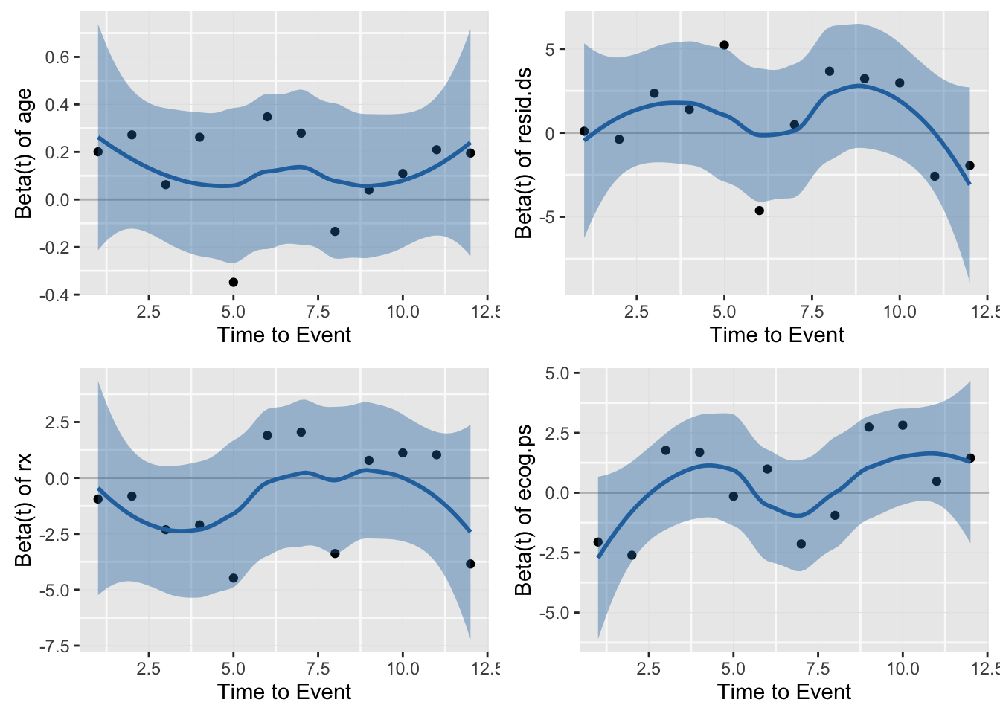
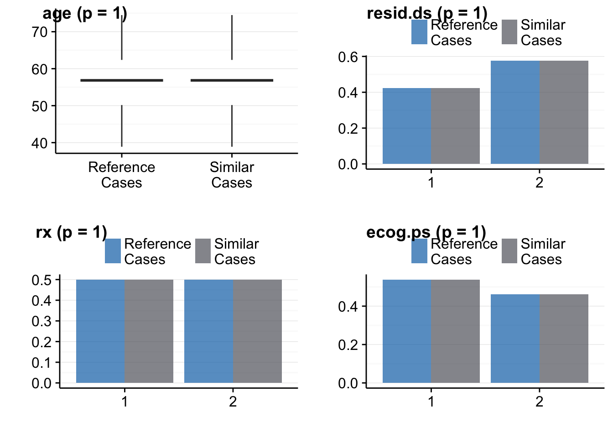

In the first example, we use the Cox-Model and the ovarian data set from the survival package. In the first step we initialize the R6 data object.
library(survival)
library(ggplot2)
library(cbr)
# all variables should be numeric or factor
ovarian$resid.ds <- factor(ovarian$resid.ds)
ovarian$rx <- factor(ovarian$rx)
ovarian$ecog.ps <- factor(ovarian$ecog.ps)
# initialize R6 object
sc <- cbrCoxModel$new(Surv(futime, fustat) ~ age + resid.ds + rx + ecog.ps, data=ovarian, queryData=ovarian)## Dropped cases with missing values: 0
## Dropped cases with missing values: 0All cases with missing values in the learning and end point variables are dropped (na.omit) and the reduced data set without missing values is saved internally. You get a text output on how many cases were dropped. character variables will be transformed to factor.
After the initialization, we may want to get for each case in the query data the most similar case from the learning data.
sc$calc_similar_cases(k = 1)## Start caclulating similar cases...
## Start learning...
## Learning finished in: 0.02 seconds.
## Similar cases calculation finished in: 0.04 seconds.You may extract then the similar cases and the verum data and put them together:
simCases <- sc$get_matched_data()Note 1: In the initialization step, we dropped all cases with missing values in the variables of data and endPoint. The function sc$get_data() returns the dataset without missing values in the dependent and independent variables.
Note 2: The data.table returned from sc$simCases has an additional column caseId. By this column you may map the similar cases to cases in data, e.g. if you had chosen k = 3, then the first three elements in the column caseId will be 1 (following three 2 and so on). This means that this three cases are the three most similar cases to case 1 in verum data.
pp <- sc$check_ph()
pp
You may want to check the distibution of the independent variables of the query data and similar cases dataset:
pp <- sc$validate_model()## Two-sample Wilcoxon test for variable: age; p = 1
## Chi-Square test for variable: resid.ds; p = 1
## Chi-Square test for variable: rx; p = 1
## Chi-Square test for variable: ecog.ps; p = 1pp
The function sc$validate() returns an gg and ggplot object.
Alternatively, you may just be interested in the distance matrix, then you go this way:
sc <- cbrCoxModel$new(Surv(futime, fustat) ~ age + resid.ds + rx + ecog.ps, data=ovarian)## Dropped cases with missing values: 0sc$calc_distance_matrix()## Start calculating distance matrix...
## Start learning...
## Learning finished in: 0.01 seconds.
## Distance matrix calculation finished in: 0.02 seconds.sc$getFullDistanceMatrix() calculates the full distance matrix. This matrix the dimension: cases of data versus cases of query data. If the query dataset is bot available, this functions calculates a n times n distance matrix of all pairs in data.
The distance matrix is saved internally in the cbrCoxModel object: sc$distMat.